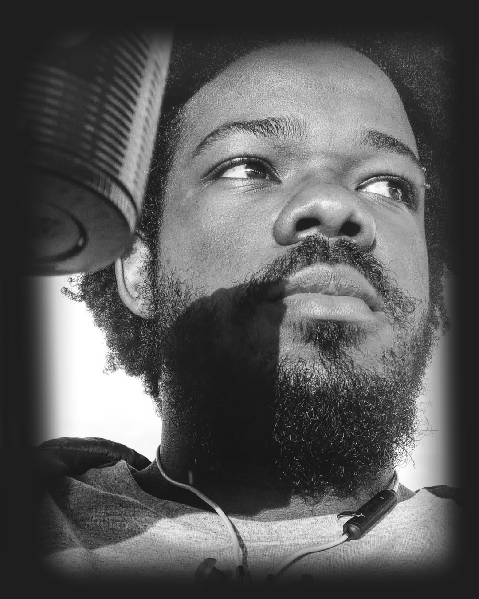

Minha jornada na Trybe começou a um mês, e aqui estou realizando o meu primeiro projeto, é muito gratificante como eu evoluí não só nas habilidades técnicas, mas também o senso de trabalho em equipe, busca otimizada para solucionar problemas e empatia para com o próximo. Além dessas soft-skills obtive um bom aprendizado com o Git/GitHub, ferramenta que usamos todos os dias nos exercícios, aprimorei também meu CSS e HTML. Me sinto muito realizado com esse primeiro mês, agora mais que nunca tenho certeza que tomei a decisão certa ao entrar na Trybe. #VQV.

- Unix
- Git
- GitHub
- Empatia
- HTML
- CSS
- Slack
- Zoom
- Inspect
- Semantic HTML
- SQL
- JavaScript
- Node
- DOM
- React
- Forms
- Unit Tests
- CSS Responsive
- HOF
- ES6